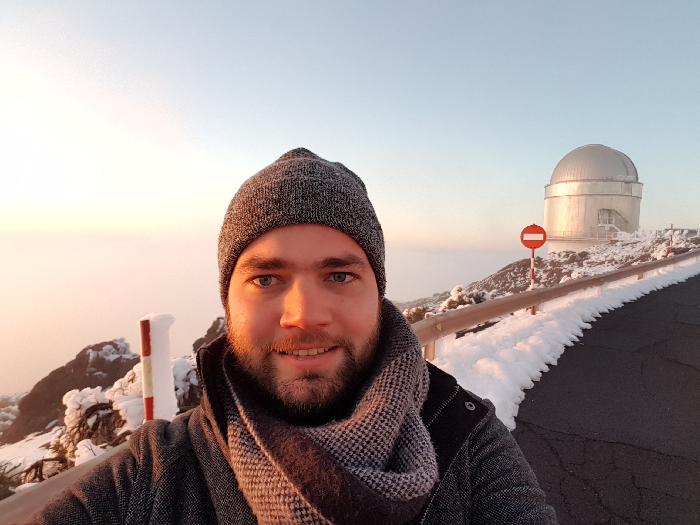

I am a Belgian astronomer and Associate Professor in Exoplanets at the Mullard Space Science Laboratory at University College London. Before joining UCL I was a Henry Norris Russell Fellow at Princeton University and a Jan Hendrik Oort Fellow at the Sterrewacht at Leiden University in The Netherlands.
I received a PhD in Physics from Aarhus University in Denmark, where I worked at the Stellar Astrophysics Centre. My thesis advisors were Prof. Simon Albrecht and Prof. Hans Kjeldsen. I was a visiting graduate student at MIT where I worked with Prof. Josh Winn.
I hold a master degree in astrophysics and a bachelor degree in physics (with a minor in mathematics) from the University of Leuven, Belgium. I was president of student organization Wina and have been a student representative active in various university boards. Before starting my doctoral studies, I did an internship as a project engineer at the dredging company DEME in Doha, Qatar.
My research team has featured in national and international media and I have been a guest on BBC radio in the UK and NOS radio in the Netherlands. Media inquiries are welcome by email.